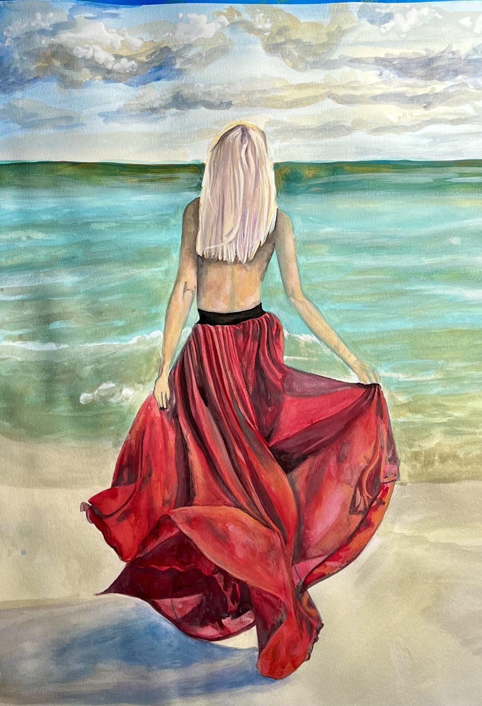
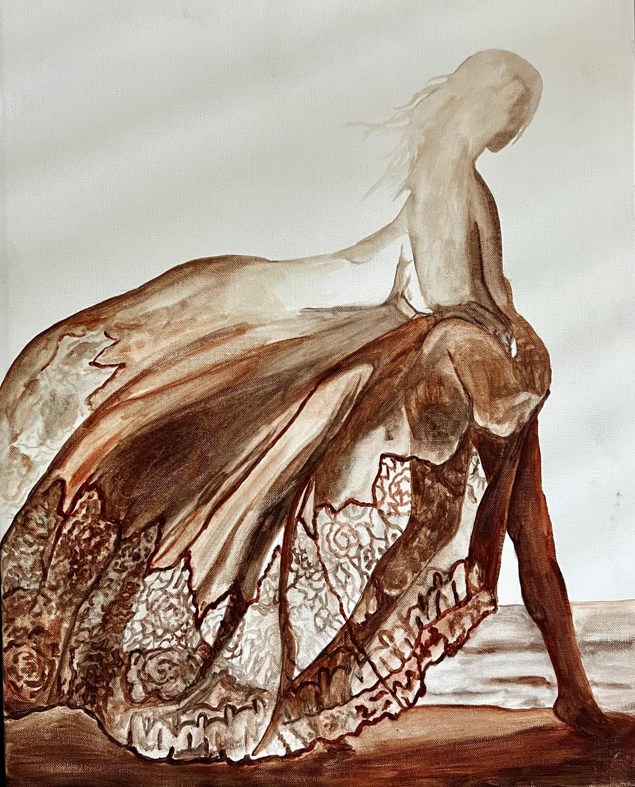

Queen of the Night
Watercolor, acrylic marker and ink on paper
24 × 18 in · 2026
$2,600
View painting & purchaseOriginal art · Direct from the artist
Expressive figures, botanical forms and the California coast. Find an original to live with, or commission a painting around your own story and space.
Created by Kimberly Marnell in Irvine, California.
Queen of the Night · Original mixed media · $2,600Three paintings, three different moods. See the full artwork, dimensions and price before you purchase.
Watercolor, acrylic marker and ink on paper
24 × 18 in · 2026
$2,600
View painting & purchase
Watercolor on paper
24 × 18 in · 2023
$2,600
View painting & purchase
Acrylic on paper
24 × 18 in · 2022
$2,600
View painting & purchaseChoose your subject, size and palette online. Kimberly follows up when more details are needed.
For your home or a meaningful gift
Bring a person, place, flowers or an idea into an original painting. Start with guided choices and see your artwork price as you plan.
Choose your commissionIf you have a holiday date in mind, ask Kimberly to confirm timing before booking.
For interior designers
Choose the size, style and colors for your project. Share textile swatches and color references so the artwork can coordinate with your design.
Plan art for your project10% off published commission rates for eligible professionals. Book with a 50% artwork deposit or full artwork payment. Extras may apply.
Ask about a painting, discuss placement, or share what you have in mind for a commission.
Email Kimberly